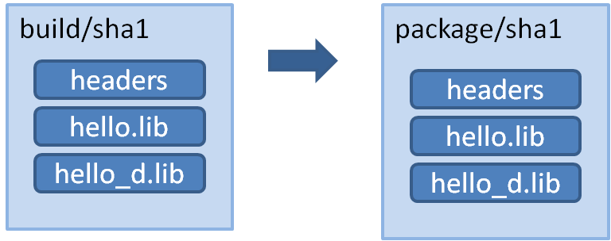

Packaging Approaches
Package recipes have three methods for controlling the package’s binary compatibility and for implementing different packaging approaches: package_id(), build_id() and package_info().
These methods let package creators select the method most suitable for each library.
1 config (1 build) -> 1 package
A typical approach is to have one configuration for each package containing the artifacts. Using this approach, for example, the debug pre-compiled libraries will be in a different package than the release pre-compiled libraries.
So if there is a package recipe that builds a “hello” library, there will be one package containing the release version of the “hello.lib” library and a different package containing a debug version of that library (in the figure denoted as “hello_d.lib”, to make it clear, it is not necessary to use different names).

Using this approach, the package_info() method, allows you to set the appropriate values for consumers,
letting them know about the package library names, necessary definitions and compile flags.
class HelloConan(ConanFile):
settings = "os", "compiler", "build_type", "arch"
def package_info(self):
self.cpp_info.libs = ["mylib"]
It is very important to note that it is declaring the build_type as a setting. This means that a
different package will be generated for each different value of such setting.
The values declared by the packages (the include, lib and bin subfolders are already
defined by default, so they define the include and library path to the package) are translated
to variables of the respective build system by the used generators. That is, running the cmake
generator will translate the above definition in the conanbuildinfo.cmake to something like:
set(CONAN_LIBS_MYPKG mylib)
# ...
set(CONAN_LIBS mylib ${CONAN_LIBS})
Those variables, will be used in the conan_basic_setup() macro to actually set the relevant cmake
variables.
If the developer wants to switch configuration of the dependencies, they will usually switch with:
$ conan install -s build_type=Release ...
# when need to debug
$ conan install -s build_type=Debug ...
These switches will be fast, since all the dependencies are already cached locally.
This process offers a number of advantages:
It is quite easy to implement and maintain.
The packages are of minimal size, so disk space and transfers are faster, and builds from sources are also kept to the necessary minimum.
The decoupling of configurations might help with isolating issues related to mixing different types of artifacts, and also protecting valuable information from deploy and distribution mistakes. For example, debug artifacts might contain symbols or source code, which could help or directly provide means for reverse engineering. So distributing debug artifacts by mistake could be a very risky issue.
Read more about this in package_info().
N configs -> 1 package
Warning
This approach is discouraged. The support for defining multi-configuration packages (self.cpp_info.release, self.cpp_info.debug),
will be removed in Conan 2.0, as discussed and approved by the Tribe in https://github.com/conan-io/tribe/pull/21. New generators and
helpers in conan.tools.xxxx, like CMakeDeps or MSBuildDeps already ignore cpp_info multi-configuration definitions.
You may want to package both debug and release artifacts in the same package, so it can be consumed from IDEs like Visual Studio. This will change the debug/release configuration from the IDE, without having to specify it in the command line. This type of package can contain different artifacts for different configurations and can be used to include both the release and debug version of a library in the same package.
{kind=link}
Note
A complete working example of the following code can be found in the examples repo: https://github.com/conan-io/examples
$ git clone https://github.com/conan-io/examples.git
$ cd features/multi_config
$ conan create . user/channel
Creating a multi-configuration debug/release package is simple
The first step will be to remove build_type from the settings. It will not be an input setting and the generated package will always
contain both debug and release artifacts.
The Visual Studio runtime is different for debug and release (MDd or MD) and is set using the default runtime (MD/MDd). If
this meets your needs, we recommend removing the compiler.runtime subsetting in the configure() method:
class HelloConan(ConanFile):
# build_type has been omitted. It is not an input setting.
settings = "os", "compiler", "arch"
generators = "cmake"
# Remove runtime and use always default (MD/MDd)
def configure(self):
if self.settings.compiler == "Visual Studio":
del self.settings.compiler.runtime
def build(self):
cmake_release = CMake(self, build_type="Release")
cmake_release.configure()
cmake_release.build()
cmake_debug = CMake(self, build_type="Debug")
cmake_debug.configure()
cmake_debug.build()
In this example, the binaries will be differentiated with a suffix in the CMake syntax, so we have to add this information to the data provided to the consumers in the package_info function:
set_target_properties(mylibrary PROPERTIES DEBUG_POSTFIX _d)
Such a package can define its information for consumers as:
def package_info(self):
self.cpp_info.release.libs = ["mylibrary"]
self.cpp_info.debug.libs = ["mylibrary_d"]
This will translate to the CMake variables:
set(CONAN_LIBS_MYPKG_DEBUG mylibrary_d)
set(CONAN_LIBS_MYPKG_RELEASE mylibrary)
# ...
set(CONAN_LIBS_DEBUG mylibrary_d ${CONAN_LIBS_DEBUG})
set(CONAN_LIBS_RELEASE mylibrary ${CONAN_LIBS_RELEASE})
And these variables will be correctly applied to each configuration by conan_basic_setup() helper.
In this case you can still use the general and not config-specific variables. For example, the include directory when set by default to include remains the same for both debug and release. Those general variables will be applied to all configurations.
Important
The above code assumes that the package will always use the default Visual Studio runtime (MD/MDd).
To keep the package configurable for supporting static(MT)/dynamic(MD) linking with the VS runtime
library, you can do the following:
Keep the
compiler.runtimesetting, e.g. do not implement theconfigure()method removing it.Don’t let the CMake helper define the
CONAN_LINK_RUNTIMEvariable to define the runtime and defineCONAN_LINK_RUNTIME_MULTIinstead.In CMakeLists.txt, use the
CONAN_LINK_RUNTIME_MULTIvariable to correctly setup up the runtime for debug and release flags.Write a separate
package_id()methods for MD/MDd and for MT/MTd defining the packages to be built.
All these steps are already coded in the repo https://github.com/conan-io/examples/tree/master/features/multi_config and commented out as “Alternative 2”.
Note
The automatic conversion of multi-config variables to generators is currently implemented in
the cmake, visual_studio, txt, and cmake_find_package generators (and also
for their corresponding _multi implementations).
If you want to have support for them in another build system, please open a GitHub issue.
N configs (1 build) -> N packages
It’s possible that an existing build script is simultaneously building binaries for different configurations, like debug/release, or different architectures (32/64bits), or library types (shared/static). If such a build script is used in the previous “Single configuration packages” approach, it will definitely work without problems. However, we’ll be wasting precious build time, as we’ll be rebuilding the project for each package, then extracting the relevant artifacts for the relevant configuration, while ignoring the others.
It is more efficient to build the logic, whereby the same build can be reused to create different packages:

This can be done by defining a build_id() method in the package recipe that will specify the
logic.
settings = "os", "compiler", "arch", "build_type"
def build_id(self):
self.info_build.settings.build_type = "Any"
def package(self):
if self.settings.build_type == "Debug":
#package debug artifacts
else:
# package release
Note that the build_id() method uses the self.info_build object to alter the build hash. If
the method doesn’t change it, the hash will match the package folder one. By setting
build_type="Any", we are forcing that for both the Debug and Release values of build_type, the
hash will be the same (the particular string is mostly irrelevant, as long as it is the same for
both configurations). Note that the build hash sha3 will be different of both sha1 and
sha2 package identifiers.
This does not imply that there will be strictly one build folder. There will be a build folder for every configuration (architecture, compiler version, etc). So if we just have Debug/Release build types, and we’re producing N packages for N different configurations, we’ll have N/2 build folders, saving half of the build time.
Read more about this in build_id().